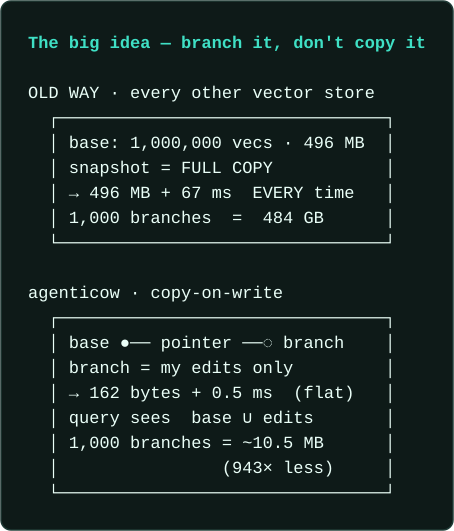
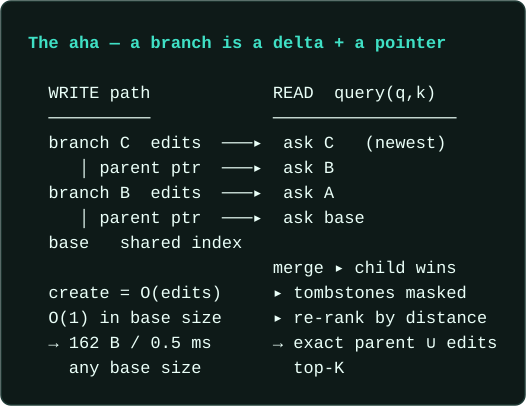
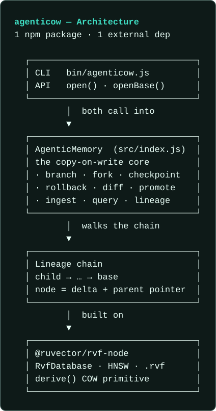

Branch a million-vector memory in 0.5 ms and 162 bytes.
Every other vector store makes you full-copy the whole index to snapshot, fork, or checkpoint it. agenticow branches it copy-on-write — like Git. A branch is just your edits plus a pointer to the base, so creating one costs ~0.5 ms and 162 bytes whether the base holds ten thousand vectors or ten million.
Query a branch and you transparently see parent ∪ your edits, child wins on id collisions, deletes honored. Embedded, in-process, one .rvf file — no server.
An independent explainer for ruvnet's agenticow — built to take you from "never seen it" to "ready to implement".
In one sentence: agenticow turns a vector memory from a static database into a branchable runtime primitive — so a fleet of agents can fork, checkpoint, and roll back what they remember as cheaply as Git forks code.
01
Snapshotting memory shouldn't cost a full copy
Why does this exist?
Agents need memory that branches — constantly.
A per-user personalization layer. A sandbox to test a risky ingest. A checkpoint before a tool call. A thousand parallel experiments off one shared base. Every one of those is a branch of memory.
But with a normal vector DB, each branch is a full copy of the whole index. At 1,000,000 vectors that is 496 MB and 67 ms — every single time. Want a branch per user? Multiply by your user count. Want to checkpoint before each risky step? Pay the full snapshot again. The cost scales with the base, not with what actually changed, so "just branch it" quietly becomes "you can't afford to."
So teams don't branch. They mutate one shared memory in place, cross their fingers on a bad ingest, and have no clean way to roll back when an agent poisons it. The thing agents need most — cheap, isolated, reversible memory — is the thing the storage layer makes most expensive.
The real costIt isn't just disk. It's the latency of a 67 ms snapshot on the hot path, and the operational dread of having no undo for a memory your agents write to live.
02
It branches the index, copy-on-write
What does it actually do?
Here is the whole idea in one move: agenticow gives a vector memory the one thing Git gave source code — instant, near-free branching.
A branch records only its own edits plus a pointer to its parent. Nothing of the base is copied. Creating a branch is therefore O(edits) and O(1) in base size — 162 bytes for an empty branch, ~0.5 ms, flat no matter how large the base.
What that buys you: branching stops being a luxury you have to ration. A branch per user, a checkpoint before every risky tool call, a throwaway sandbox per experiment — each costs 162 bytes instead of a full copy. The price stops scaling with how big your memory is and starts scaling with how little you actually changed, so the moves you used to avoid — isolate, checkpoint, undo — become ones you simply make.
The verbs are the ones you already know from Git — and they mean exactly what you'd expect:

| Operation | Normal vector DB | agenticow |
|---|---|---|
branch / fork | full copy of the index | 162 B + your edits, ~0.5 ms |
checkpoint | periodic full snapshot | 162 B + edits-since |
rollback | re-ingest + re-index from backup | drop the branch, ~0.5 ms |
diff / promote | — (no concept of it) | replay vetted edits into the base |
query | one index | parent ∪ edits, child wins, masked, re-ranked |
03
The clever move: point at the base, never copy it
Why is it so elegant?
The whole library turns on one idea — and it is the same idea that makes Git fast.
A branch is a delta plus a parent pointer. Because nothing is duplicated, create cost is decoupled from base size — that is the entire 83×-faster / 3000×-smaller headline.
Reads stay exact without ever materializing the union. A query(q, k) walks the lineage chain child → … → base, asks each store with its own native index, then merges: the child wins on any id collision, anything the branch tombstoned is masked, and the survivors are re-ranked by exact distance. You get the true parent ∪ edits top-K — no full copy ever existed.

Oh — branching is free because a branch isn't a copy of the base, it's a diff against it. The base is read through a pointer, so 162 bytes buys you a whole independent memory.
04
How it's built
How is it built?
A small, honest package over a real vector engine.
agenticow is a single npm package (Node ≥ 18, ESM) with one external dependency: @ruvector/rvf-node, ruvector's RVF format with its RvfDatabase (HNSW index, .rvf files, and the shipped derive() primitive). The whole public surface — open, openBase, and the AgenticMemory class with its Git-like verbs — lives in src/index.js, typed in src/index.d.ts, with a CLI in bin/agenticow.js.
The architecture (left) shows the layers: CLI and API both call the copy-on-write core, which walks a lineage chain of delta stores built on RVF. The data flow (right) shows a branch's lifecycle: fork → mutate → verify → promote-or-rollback. agenticow implements the exact read-through merge in this wrapper; a native ANN query that spans the COW boundary (fork({ nativeAnn: true }), recall@10 ≈ 1.0) ships for linux-x64 today and degrades gracefully to the exact path everywhere else.

![agenticow data flow: from a shared base.rvf that is never mutated, fork() creates a branch in about 0.5 ms and 162 bytes. Into that isolated branch you ingest vectors, query with an exact read-through (parent union edits, child wins, tombstones masked, re-ranked), then an external deterministic verifier (a test, regex or distance threshold) decides the outcome. On PASS you promote() the vetted edits into the base; on FAIL you rollback() and drop the branch, leaving the base untouched with blast radius zero.](assets/flow.svg)
05
Where this earns its keep
Could I use this?
Here is what branchable memory changes for you, concretely. Say you give each of 1,000 users their own agent off one shared base. The normal way, that is 1,000 full copies of the index — 9.69 GB — so you ration personalization or quietly drop it. With agenticow it is 1,000 branches at 162 bytes each — ~10.5 MB total, 943× less disk — and every user still queries the whole base plus their own private edits (recall@10 = 100% in the acceptance test, ~0.49 ms per fork). The same move covers you when an ingest is risky — sandbox it in a branch and drop it on a bad result, so your real memory never sees it — and when a long run can crash — checkpoint before each step and rewind in half a millisecond. One paradigm, three runnable examples in the repo: branch → mutate → externally verify → promote or discard.
1 Parallel agents share one base memory personalization
For you: one shared base, a branch per user/account/tenant — personalization without the memory explosion. Private edits stay isolated; storage is delta-only. The acceptance test forks 1,000 branches off one base — recall@10 = 100%, ~0.49 ms/fork, 10.5 MB total vs 9.69 GB for 1,000 full copies (943× less disk).
const base = open('kb.rvf', { dimension: 1536 });
const userMem = base.fork(`user-${userId}`);
userMem.ingest([{ id, vector }]); // private to this user
userMem.query(q, 10); // reads through to the base2 Roll back a poisoned or hallucinated branch safety
For you: a kill-switch for bad memory. An untrusted batch lands in an isolated fork, never the base. A deterministic checker (a distance probe, not a cheap LM judging itself) gates it. Exploit detected → rollback() in ~1 ms and 0 vectors ever reached the base. Clean → promote() the vetted delta.
const sandbox = base.fork('untrusted-doc');
sandbox.ingest(docEmbedding, { text });
const hit = sandbox.query(injectionSig, { topK: 3 });
if (hit[0].distance < 0.02) sandbox.rollback(); // discard
else sandbox.promote(); // merge3 Zero-cost checkpointing before risky steps recovery
For you: crash recovery without a re-ingest. Checkpoint memory before each risky tool call (162 bytes each). When step 31 crashes, roll back to the last good checkpoint in ~0.5 ms — earlier steps are not replayed.
const ck = mem.checkpoint('step-30');
// ... step 31 crashes ...
mem.rollback(ck.id); // resume from step 30, instantly
06
Start in under a minute
How do I start?
That's the whole model. One install, an API that reads like Git, and you can branch, checkpoint, and roll back agent memory in your own code in the next five minutes. Node ≥ 18, ESM.
npm install agenticow- Open a base memory.
const base = open('memory.rvf', { dimension: 1536 })thenbase.ingest([{ id, vector }]). - Branch it for an agent.
const agent = base.branch('agent-a')— ~0.5 ms / 162 B — thenagent.ingest(...), isolated from the base. - Query the read-through.
agent.query(queryVector, 10)returnsparent ∪ edits, child winning on id collisions, tombstones masked. - Checkpoint and roll back.
const ck = agent.checkpoint('clean'); after a bad ingest,agent.rollback(ck.id)— the poison is gone, clean memory intact. - Or drive it from the CLI.
agenticow demoruns an end-to-end walkthrough;agenticow benchandagenticow acceptancereproduce the headline numbers yourself.
07
Hand your AI the same understanding
Does my AI get it too?
This page explains agenticow to you. The knowledge pack explains it to your agent — a real RVF vector KB of the source plus an MCP server, so your AI can search agenticow's code, API, and docs exactly the way this page was grounded.